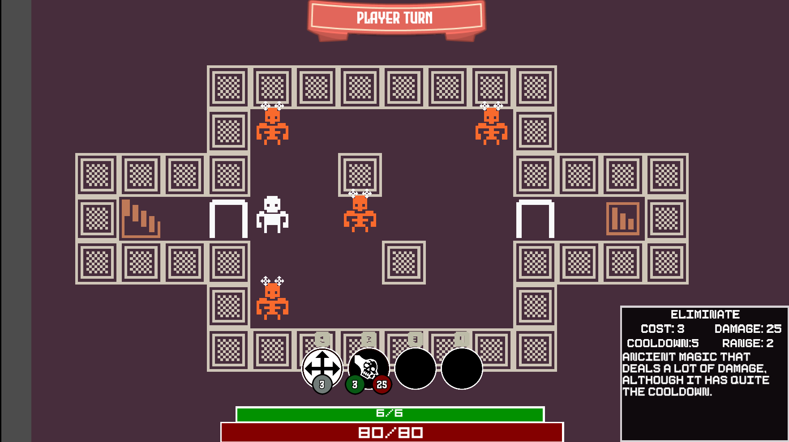

BLOG
Taking a look at the upcoming gear system
When I first started working on this game, I originally planned to have abilities that the player would pick up and use in combat. However, as time went by I began to want more features, such as buying and selling abilities from shops. That felt a little weird (I'm selling my ability to slash?). This problem as well as a desire to create another layer of depth in the gameplay led me to create a gear system!
How it works
Now, instead of picking up an ability from a chest directly, you pick up gear. Each piece of gear has one ability associated with it, and if you equip the gear you can use it in combat. For example, a steel sword would have the slash ability. What is different now is gear can have effects, which can change the way the weapon works. As an example, the above steel sword could have a +3 damage effect, which makes the slash attack deal 3 more damage when used.
There is much more this system is capable of! Another example is a necklace that heals you for 10 health after each combat, handy! Or a breastplate that gives armor at the start of combat. this can create interesting choices for the player: "The ability on this gear isn't as good as other gear, but it has amazing effects! Which should I chose?"
With all of this in mind I'm excited to see how players interact with the new gear system!